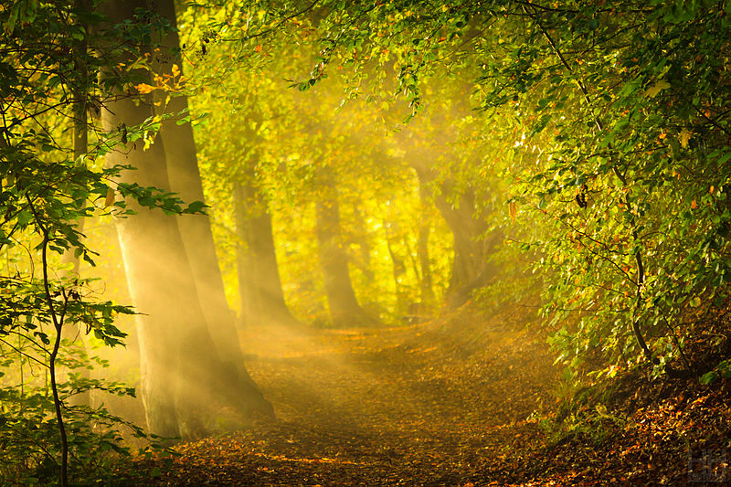
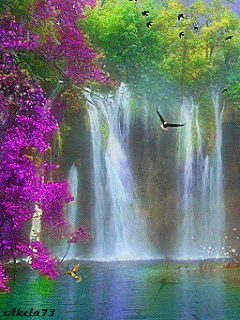
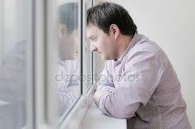
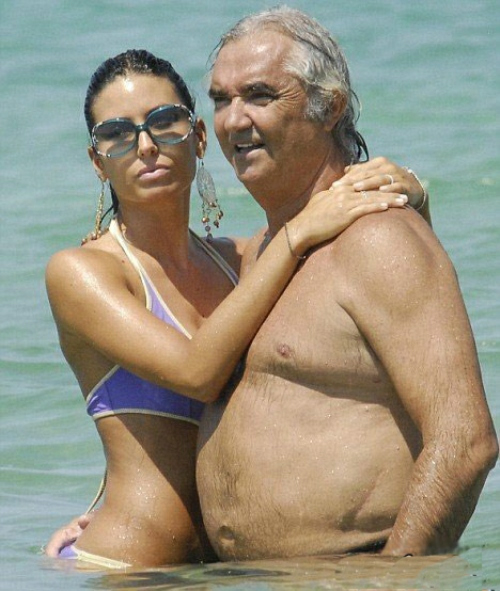
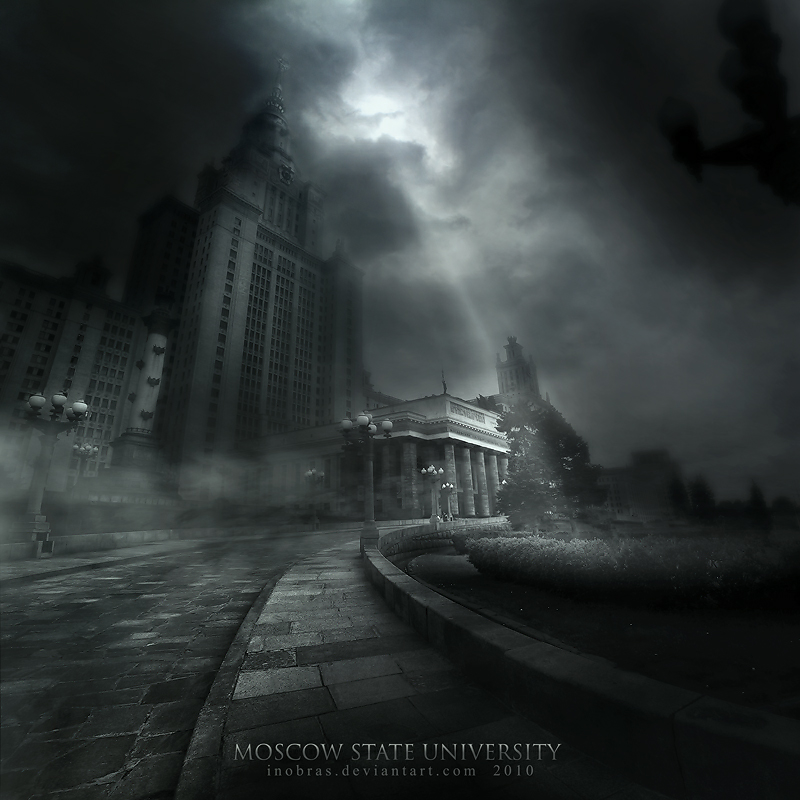
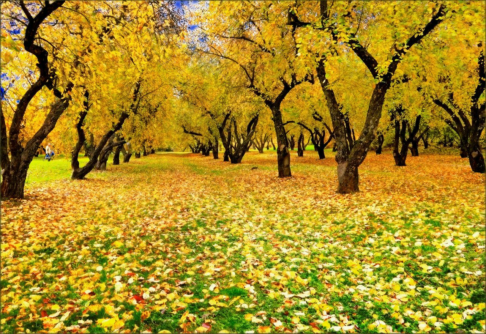
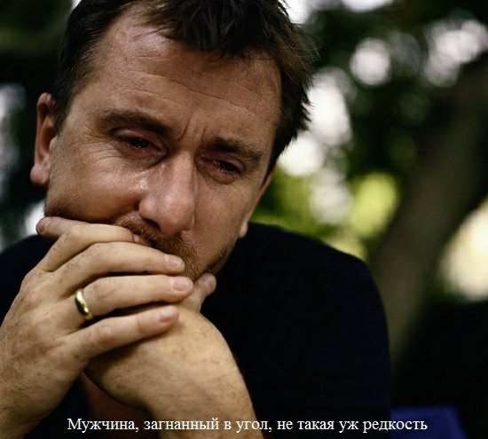

МОЛОДОСТЬ
Я лежал в кровати и наблюдал за южным зимним дождем, погода была ужасной, дул холодный северный ветер,
стуча порывами в стекло окна, но теплый плед, уютная кровать придавала этому моменту какую то особенность, вдруг стало грустно что скора сорок, я достал с под кровати потертую тетрадь,
на которой
было
выведено
стуча порывами в стекло окна, но теплый плед, уютная кровать придавала этому моменту какую то особенность, вдруг стало грустно что скора сорок, я достал с под кровати потертую тетрадь,
на которой
было
выведено
Летний цикл.
И принялся читать
Кто мы? Звери, пожирающие гавно, или птицы, приближенные к Богу?
Мы все уже умерли давно или мы ищем в небо дорогу?
Мне наплевать. Зачем же спорить?
Что жрать гавно, что искать в небо дорогу.
Кто-то кричит мне: "Молись, дурак, Богу.
Помолишься денек-другой и найдешь в небо дорогу."
А нахуй мне эта дорога нужна? Лучше я буду есть говно.
Ведь деревья и трава тоже его едят.
Если я буду его жрать, то из меня вырастет яблоко, персик или абрикоса
И я буду приносить людям счастье и радость,
А может быть и боль, если кого-то мучит геморрой.
Или вырасту травой-коноплей
И буду сорван дрожащей рукой,
Забит в папиросу и выпущен в небо голубым дымом.
Как бы я хотел раствориться в заводской копоти или в чистом воздухе школьного парка чтобы исчезнуть навсегда.
Да я в принципе и сейчас как бы уже не существую. Меня уже нет!
Я растворился в вашем нездоровом сознании.
Мы все уже умерли давно или мы ищем в небо дорогу?
Мне наплевать. Зачем же спорить?
Что жрать гавно, что искать в небо дорогу.
Кто-то кричит мне: "Молись, дурак, Богу.
Помолишься денек-другой и найдешь в небо дорогу."
А нахуй мне эта дорога нужна? Лучше я буду есть говно.
Ведь деревья и трава тоже его едят.
Если я буду его жрать, то из меня вырастет яблоко, персик или абрикоса
И я буду приносить людям счастье и радость,
А может быть и боль, если кого-то мучит геморрой.
Или вырасту травой-коноплей
И буду сорван дрожащей рукой,
Забит в папиросу и выпущен в небо голубым дымом.
Как бы я хотел раствориться в заводской копоти или в чистом воздухе школьного парка чтобы исчезнуть навсегда.
Да я в принципе и сейчас как бы уже не существую. Меня уже нет!
Я растворился в вашем нездоровом сознании.

Летние Радости и Наблюдения
Мураши едят гавно
Мне признаться все равно
Пусть едят свое гавно
Будет, нахуй, так спокойней...
Мне признаться все равно
Пусть едят свое гавно
Будет, нахуй, так спокойней...
Едет велик по дороге
Едет прямо аж пиздец
И не знает бедолага
Когда будет, блядь, конец.
Едет прямо аж пиздец
И не знает бедолага
Когда будет, блядь, конец.
Твою мать, твою мать
Буду летом загорать
Трахну девку я на пляже
С нею рядышком я ляжу
Посмотрю на небо я:
"Как прекрасна, блядь, земля!"
Буду летом загорать
Трахну девку я на пляже
С нею рядышком я ляжу
Посмотрю на небо я:
"Как прекрасна, блядь, земля!"
Чешет девка по дороге
У нее устали ноги
Хочет девка хуй сосать
Мы не станем ей мешать
***********
У нее устали ноги
Хочет девка хуй сосать
Мы не станем ей мешать
***********
Когда ты забываешь откуда ты родом,
Зачем ты живешь и как тебя зовут,
Когда тебя все обхорькали, а потом в жопу все ебут.
Нужно сесть и заплакать, а лучше зарыдать.
А потом обтерется и все в церковь отдать.
Нужно Богу помолиться
И святой водой умыться.
Стоп! Вот это я гоню!
Вот это я пишу хуйню!
Все это не для меня!
Все это хуйня!
Потому, что я знаю зачем я живу.
Я каждый день девочек в жопу ебу.
Живу я один
И зовут меня Кристин,
И если бы меня обхорькали,
Они бы сами себя всю жизнь в жопу ебали.
А рыдаю я кокого-то хуя, когда в бабу кончаю,
И в церковь хожу, только на Пасху бухать,
Чтобы попа и алтарь обрыгать.
***********
Зачем ты живешь и как тебя зовут,
Когда тебя все обхорькали, а потом в жопу все ебут.
Нужно сесть и заплакать, а лучше зарыдать.
А потом обтерется и все в церковь отдать.
Нужно Богу помолиться
И святой водой умыться.
Стоп! Вот это я гоню!
Вот это я пишу хуйню!
Все это не для меня!
Все это хуйня!
Потому, что я знаю зачем я живу.
Я каждый день девочек в жопу ебу.
Живу я один
И зовут меня Кристин,
И если бы меня обхорькали,
Они бы сами себя всю жизнь в жопу ебали.
А рыдаю я кокого-то хуя, когда в бабу кончаю,
И в церковь хожу, только на Пасху бухать,
Чтобы попа и алтарь обрыгать.
***********
Я хотел бы услышать голос природы.
Я хотел бы заниматься любовью с бурей, ожидая хорошей погоды.
Я хотел бы выпить облака, и пока я их пью,
Я понимаю, что всем сердцем обожаю тебя и люблю.
Но кого я люблю? Может девку свою?
Да вроде-бы нет, ведь она не умеет делать миньет.
И не могу я понять, зачем эту жирную бабу ебать,
Если я могу о счастье, о любви своей помечтать.
Моей любви пятнадцать лет,
И она без ума от слова "миньет".
Всем сердцем, душою и телом я обожаю.
Никого кроме этой страстной бури я любить не желаю
Я ее просто люблю и об этом на весь мир эту песню пою.
Люблю!.. Люблю!.. Люблю!.. Люблю!..
***********
Я хотел бы заниматься любовью с бурей, ожидая хорошей погоды.
Я хотел бы выпить облака, и пока я их пью,
Я понимаю, что всем сердцем обожаю тебя и люблю.
Но кого я люблю? Может девку свою?
Да вроде-бы нет, ведь она не умеет делать миньет.
И не могу я понять, зачем эту жирную бабу ебать,
Если я могу о счастье, о любви своей помечтать.
Моей любви пятнадцать лет,
И она без ума от слова "миньет".
Всем сердцем, душою и телом я обожаю.
Никого кроме этой страстной бури я любить не желаю
Я ее просто люблю и об этом на весь мир эту песню пою.
Люблю!.. Люблю!.. Люблю!.. Люблю!..
***********

- Здравствуй, Кристин.
- Здравствуй, журчание унитаза.
- Нет, Кристин, Вы не правы
Вы опять обкурились травы.
Я мудрость твоего внутреннего сознания,
Ты должен меня познать,
Ты должен меня почувствовать своей душой
И все обо мне узнать.
Хочешь я стану для тебя щебетанием соловья
или прекрасным пением сверчка?
Хочешь я стану ревом серого океана
или тишиной одинокого лесного озера,
покрытого голубой дымкой?
Хочешь стану стоном раненной лани
или веселым смехом счастливого охотника?
Или бешенным криком умирающего ребенка,
который не успел напиться материнского молока,
или бешенным плачем матери,
которая потеряла свое чадо?
- Нет, Журчание Унитаза,
спасибо, но мне этого ничего не надо.
Мне на это все наплевать!
Дай мне спокойно посрать.
*******
- Здравствуй, журчание унитаза.
- Нет, Кристин, Вы не правы
Вы опять обкурились травы.
Я мудрость твоего внутреннего сознания,
Ты должен меня познать,
Ты должен меня почувствовать своей душой
И все обо мне узнать.
Хочешь я стану для тебя щебетанием соловья
или прекрасным пением сверчка?
Хочешь я стану ревом серого океана
или тишиной одинокого лесного озера,
покрытого голубой дымкой?
Хочешь стану стоном раненной лани
или веселым смехом счастливого охотника?
Или бешенным криком умирающего ребенка,
который не успел напиться материнского молока,
или бешенным плачем матери,
которая потеряла свое чадо?
- Нет, Журчание Унитаза,
спасибо, но мне этого ничего не надо.
Мне на это все наплевать!
Дай мне спокойно посрать.
*******
Сколько это может продолжаться,
Сколько может моя морда в зеркале отражаться?
Нельзя так больше жить! Нужно с кем-нибудь дружить
Или нахуй оно надо?
*******
В жопу дул осенний ветер,
Лето красное проходит.
Что же делать?
Все уходит:
дача, море, девки, пляжи.
Я неделю не брился даже.
Все хуйня! Найдем блядей мы зрелых.
Хоть не молодых и хуево загорелых,
Ну и в рот это все ебать,
Зато будет осенью с кем спать.
*****
Я хотел бы выпить с друзьями водки,
Выпить с ними по сотке,
И о жизни помечтать,
Девочек в жопу поебать.
А зачем?
Чтобы было похвастаться чем?
Да, нет.
Просто я люблю миньет.
А еще я люблю рыбалку,
Люблю с девушками поехать на балку.
Люблю побаловать рыбкой свою мать,
На рыбалке баб поебать.
А зачем?
Чтобы было похвастаться чем?
Да, нет.
Просто я люблю миньет.
А что еще я люблю?
Да вроде ничего.
Разве что в рот и в жопу поебать кого.
****************
Сколько может моя морда в зеркале отражаться?
Нельзя так больше жить! Нужно с кем-нибудь дружить
Или нахуй оно надо?
*******
В жопу дул осенний ветер,
Лето красное проходит.
Что же делать?
Все уходит:
дача, море, девки, пляжи.
Я неделю не брился даже.
Все хуйня! Найдем блядей мы зрелых.
Хоть не молодых и хуево загорелых,
Ну и в рот это все ебать,
Зато будет осенью с кем спать.
*****
Я хотел бы выпить с друзьями водки,
Выпить с ними по сотке,
И о жизни помечтать,
Девочек в жопу поебать.
А зачем?
Чтобы было похвастаться чем?
Да, нет.
Просто я люблю миньет.
А еще я люблю рыбалку,
Люблю с девушками поехать на балку.
Люблю побаловать рыбкой свою мать,
На рыбалке баб поебать.
А зачем?
Чтобы было похвастаться чем?
Да, нет.
Просто я люблю миньет.
А что еще я люблю?
Да вроде ничего.
Разве что в рот и в жопу поебать кого.
****************
Интересные вы, люди. Вы что любите?
Сначала любите, а потом все губите?
Так жить нельзя. Так вы и не живете.
Вы ведь каждый день друг друга в жопу ебете.
Морально и физически. На сиденье своего
рабочего кресла и на грязном унитазе,
Собирая на жопу всю заразу.
Если бы вы знали, как я вас ненавижу.
Я охуеваю от вас всех,
Я вас насквозь всех вижу.
Что вы, суки, делаете, будьте сами собой.
Ведь вы любите свободу.
Вы об этом еще не думали, любит из вас ее любой.
Да плюньте на все, улыбнитесь друг другу.
Поцелуйте в губы своего друга или подругу,
Возьмитесь за руки и бегите от всех прочь.
Ну а если вы долбоебы, извините, я вам не смогу ничем помочь.
**************
Сначала любите, а потом все губите?
Так жить нельзя. Так вы и не живете.
Вы ведь каждый день друг друга в жопу ебете.
Морально и физически. На сиденье своего
рабочего кресла и на грязном унитазе,
Собирая на жопу всю заразу.
Если бы вы знали, как я вас ненавижу.
Я охуеваю от вас всех,
Я вас насквозь всех вижу.
Что вы, суки, делаете, будьте сами собой.
Ведь вы любите свободу.
Вы об этом еще не думали, любит из вас ее любой.
Да плюньте на все, улыбнитесь друг другу.
Поцелуйте в губы своего друга или подругу,
Возьмитесь за руки и бегите от всех прочь.
Ну а если вы долбоебы, извините, я вам не смогу ничем помочь.
**************
Хотел бы я навсегда уехать из дома ,
Набить каму то просто так ебало,
Будет мало ,набить еще ебало.
Хотя больше всего хотел бы накуриться и девочек трахать
громка ахать и кричать
А родителей в соседней комнате ре замечать
А потом набраться наглости и с ними забухать
А после выйти на балкон и закурить с другом сигарету
Девочка эта сделала бы нам по миньету
Заплакала ,збросилась бы с болкона и ее уже нету
Жалко девчонку, любил бы ее,
Нежно ласкал бы, лизал , ебал бы
Только б она улыбалась, только б не разбивалась, только б живая осталась
Но хуй там, разбилась, ну и врот она ебалась.
************
Ночью я долго люблю смотреть на звезды
Днем я люблю нежно вылизывать бабам пезды
С друзьями люблю ебать чью-то жену
С врагами я люблю курить конопли
Что бы они от нее обрыгались
А мне - по хую
В гостях я люблю выпить водки и вкусно пожрать
Поговорить о жизни, а потом весь стол обрыгать.
Но я понимаю - всем по хую что я люблю
Все хотят нахарькать в душу мою
Но и мне наплевать Всех вас в рот я хотел ебать. Мне все по хую, что хочу, то и люблю.

Набить каму то просто так ебало,
Будет мало ,набить еще ебало.
Хотя больше всего хотел бы накуриться и девочек трахать
громка ахать и кричать
А родителей в соседней комнате ре замечать
А потом набраться наглости и с ними забухать
А после выйти на балкон и закурить с другом сигарету
Девочка эта сделала бы нам по миньету
Заплакала ,збросилась бы с болкона и ее уже нету
Жалко девчонку, любил бы ее,
Нежно ласкал бы, лизал , ебал бы
Только б она улыбалась, только б не разбивалась, только б живая осталась
Но хуй там, разбилась, ну и врот она ебалась.
************
Ночью я долго люблю смотреть на звезды
Днем я люблю нежно вылизывать бабам пезды
С друзьями люблю ебать чью-то жену
С врагами я люблю курить конопли
Что бы они от нее обрыгались
А мне - по хую
В гостях я люблю выпить водки и вкусно пожрать
Поговорить о жизни, а потом весь стол обрыгать.
Но я понимаю - всем по хую что я люблю
Все хотят нахарькать в душу мою
Но и мне наплевать Всех вас в рот я хотел ебать. Мне все по хую, что хочу, то и люблю.
Как мне надоело, дорогая жить с тобою.
Лежать на кровати и плевать в потолок, нежно поглаживая твой лобок,
А утром проснувшись, тебе улыбнувшись травы хапануть,
Пожрать что-нибудь и идти на работу.
Пиздец! Как неохота идти на работу.
А! Ебалась она в рот. Трава уже прет.
Попью компоту.
И дам жене пизды.
Выебу ее в жопу.
Попью еще компоту и лягу спать.
И так каждый день...
Как надоела ты мне, дорогая!
Лучше с пацаном курить коноплю
Нежно обнявши дочку свою
Или копать в огороде картошку
Или кричать анну прочь от окошка окошке
Кто может мне все запретить?
Мент? Который сам любит траву курить.
Или жена? Которая каждый день сосет мой член.
А я знаю! Это Библия!
Но я знаю, что Библия - хуйня.
Ведь она учит делать добро.
А я понимаю добро как зло.
Жалко только нет у меня дочки,
Нет жены и хуевая у меня заточка.
Ну и в рот это все ебать.
Вот дописываю этот стих и иду спать.
А в принципе и это хуйня.
Главное - чтобы было денег до хуя.
Вот будет много денег,заведу себе жену,
Выжму все соки из нее, обоссу и подожгу,
Потому что я не стороник этих браков.
Ведь я люблю ебать девушек только в сраку.
Да! В самое очко в самое дрысталище.
И я горжусь этим.
Лежать на кровати и плевать в потолок, нежно поглаживая твой лобок,
А утром проснувшись, тебе улыбнувшись травы хапануть,
Пожрать что-нибудь и идти на работу.
Пиздец! Как неохота идти на работу.
А! Ебалась она в рот. Трава уже прет.
Попью компоту.
И дам жене пизды.
Выебу ее в жопу.
Попью еще компоту и лягу спать.
И так каждый день...
Как надоела ты мне, дорогая!

Лучше с пацаном курить коноплю
Нежно обнявши дочку свою
Или копать в огороде картошку
Или кричать анну прочь от окошка окошке
Кто может мне все запретить?
Мент? Который сам любит траву курить.
Или жена? Которая каждый день сосет мой член.
А я знаю! Это Библия!
Но я знаю, что Библия - хуйня.
Ведь она учит делать добро.
А я понимаю добро как зло.
Жалко только нет у меня дочки,
Нет жены и хуевая у меня заточка.
Ну и в рот это все ебать.
Вот дописываю этот стих и иду спать.
А в принципе и это хуйня.
Главное - чтобы было денег до хуя.
Вот будет много денег,заведу себе жену,
Выжму все соки из нее, обоссу и подожгу,
Потому что я не стороник этих браков.
Ведь я люблю ебать девушек только в сраку.
Да! В самое очко в самое дрысталище.
И я горжусь этим.

Черный Лес закрыл глаза,
звезды уныло позихнули...
Я хотел было что-то сказать,
но мы с тобой уже уснули.
За что ты любишь меня?
До сих пор я не знаю.
Ты красивая молодая и даже умная.
Я все понимаю.
Но ведь я - старый, жирный и тупой.
И хуйня, что много денег у меня.
Зато каждый день я только в зеркале вижу свой член
Потому, что большой у меня живот.
Посмотри, сука, на мой живот!
Вот он какой! Вот!
И ты хочешь сказать, что любишь меня?
Нет, все это хуйня!
Ты наебываешь меня!
И член мой недостоин твоего влагалища.
Да! Только в дрысталище! Только в очко!
Да! Да!
Только туда!
звезды уныло позихнули...
Я хотел было что-то сказать,
но мы с тобой уже уснули.
За что ты любишь меня?
До сих пор я не знаю.
Ты красивая молодая и даже умная.
Я все понимаю.
Но ведь я - старый, жирный и тупой.
И хуйня, что много денег у меня.
Зато каждый день я только в зеркале вижу свой член
Потому, что большой у меня живот.
Посмотри, сука, на мой живот!
Вот он какой! Вот!
И ты хочешь сказать, что любишь меня?
Нет, все это хуйня!
Ты наебываешь меня!
И член мой недостоин твоего влагалища.
Да! Только в дрысталище! Только в очко!
Да! Да!
Только туда!
осенний цыкл овцы вили на Луну

Овцы выли на Луну.
Одного я не пойму, почему мне так хуево.?
И жена у меня вроде здоровая.
Так... телка нихуевая.
ебать можно.
И дети меня любят.
Они мне ни разу об этом не говорили,
но я знаю, что любят.
Хотя хуй его знает,
но они меня ни разу на хуй не посылали,
хотя знали и слышали, как я их не раз послал на хуй.
А вообще семья - это хуйня.
Для меня важна не она,
а то, что я - самый важный в своем маленьком мире.
И дети мои знают,
что их мать хуярят два здоровых мужика - мой друг Сережка и я, Иван, их отец.
Когда в первый раз - пиздец! думал моей жене.
Ну и мне конечно...
Был бы пиздец - мусора посадили бы.
Дети ведь всю хуйню видели и знали.
Пришлось бы и детей убить, но кого бы мне пришлось кормить?
Самого себя?
Нет. Нихуя!
Тогда я не буду самым важным.
Вот так и живу я:
Ведь, по моему, они меня до такой степени ненавидят,
что когда я выращу до определенных размеров
и определенного возраста,
когда их руки окрепнут
и головы их станут умными - они меня убъют.
И не поймут
зачем.
Так. Природа им подскажет,
убить меня.
Может поэтому мне так всегда становится хуево, когда
овцы воют на Луну.
Одного я не пойму, почему мне так хуево.?
И жена у меня вроде здоровая.
Так... телка нихуевая.
ебать можно.
И дети меня любят.
Они мне ни разу об этом не говорили,
но я знаю, что любят.
Хотя хуй его знает,
но они меня ни разу на хуй не посылали,
хотя знали и слышали, как я их не раз послал на хуй.
А вообще семья - это хуйня.
Для меня важна не она,
а то, что я - самый важный в своем маленьком мире.
И дети мои знают,
что их мать хуярят два здоровых мужика - мой друг Сережка и я, Иван, их отец.
Когда в первый раз - пиздец! думал моей жене.
Ну и мне конечно...
Был бы пиздец - мусора посадили бы.
Дети ведь всю хуйню видели и знали.
Пришлось бы и детей убить, но кого бы мне пришлось кормить?
Самого себя?
Нет. Нихуя!
Тогда я не буду самым важным.
Вот так и живу я:
- стихи сочиняю;
- жену поебываю;
- деток выращиваю.
Ведь, по моему, они меня до такой степени ненавидят,
что когда я выращу до определенных размеров
и определенного возраста,
когда их руки окрепнут
и головы их станут умными - они меня убъют.
И не поймут
зачем.
Так. Природа им подскажет,
убить меня.
Может поэтому мне так всегда становится хуево, когда
овцы воют на Луну.

Глаза ослепли и вместо слов слышен шепот.Мы хотели с тобой жить вечно,
но зачем?!!
Пора умирать.
Кто-то тоже скоро ослепнет и начнет говорить шепотом.
Тогда нас станет много и мы будем с жадностью глотать воздух,
смотря друг на друга стеклянными глазами,
и говорить шепотом о Вечности.
Но это ведь глупо.
Мы не услышим друг друга и будем думать о том,
что больше никого нет.
Как это скучно - думать что больше никого нет.
++++++++++++++++++++++++++++
Я хотел бы увидеть небо с облаками,
но ты вижегла солнцем мне глаза.
Я хотел бы обнять Землю руками,
но ты мне сказала, что этого делать нельзя.
Я побежал по тропинке, собирая все придорожные камни,
ты смотрела вслед и улыбалась.
Я закрыл в нашем доме все двери и ставни,
а ты зажгла этот дом и ушла спотыкаясь.
Кто ты? Сука или моя любовь?
Я знаю кто ты.
Ты - боль в моей жопе.
Ты - грязная и вонючая боль в жопе.
----------------------------------
Если у меня помяты вещи,
если обрыганы брюки и сильно болит голова,
если в карамане лежит телефон шестнадцатилетней иры,
и член мой вымазан в губную помаду,
то значит не все потеряно в моей жизни.
Значит стоит еще раз выключить пальцем будильник, умыться и почистить желтые от никотина зубы и подумать о том, что приготовить на завтрак и идти на работу. Если работы нет, то выпить таблетку от головы, набрать Ирын телефон, которая не смогла после вчерашней пьянки идти в школу.
- Здравствуй, Ира.
-Здравствуй, Кристин.
-Ты одна?
-Да, Кристин.
- И я один. Ты уроки сделала?
-Нет.
-От блядь.
/////////////////////////////////////////////////////////////////////////////////////////////////////////////////////////////////////////////////////////////////////
Лес плачет от горя и стыда,
Ведь уходит теплота.
Куда-то далеко, куда-то туда.
Холодно пиздец!
Скоро наступит конец страданиям листвы.
Вы поймете, что пора свитерки одевать
И девочку на скамейке уже не поебать,
Можно им конечно дать хуй пососать.
Но нахуя?
Ей так не по приколу.
Та и мне тоже.
Может можно в жопу выебать?
Но ну его нахуй.
Это ж такое дело.
+++++++++++++++++++++++++++++++++++++++++++++++++++++++++++++++++++++++++++
Кавказское ебало взрывает дома,
а мне по хую - я бабу ебу.
+++++++++++++++++++++++++++++++++++++++++++++++++++++++++++++++++++++++++++
Треугольники, квадраты и кУбы.
Голубые глаза и красивые гУбы.
Дудка, сопилка и бубЕн.
Большие яйца и немаленький член.
+++++++++++++++++++++++++++++++++++++++++++++++++++++++++++++++++++++++++++
Я не могу.
Я умру.
Я не дурак.
Я просто так.
Я не хочу.
Я закричу.
Я убегу.
- Да, пизда?
- Угу.
+++++++++++++++++++++++++++++++++++++++++++++++++++++++++++++++++++++++++++
Я хочу искупаться в горьких слезах.
Белая роза в зеленом саду.
Хочешь умру на твоих лепестках
или тихонько с тобою усну?
+++++++++++++++++++++++++++++++++++++++++++++++++++++++++++++++++++++++++++
Старания и труд друг друга в рот ебут.
И мы всех в рот ебем старательно и дружно.
+++++++++++++++++++++++++++++++++++++++++++++++++++++++++++++++++++++++++++
Можно засунуть себе палец в жопу.
И на секунду представить, что ты гомосексуалист.
Можно часами смотреть на вбитый в стену гвоздь,
и кроме гвоздя ничего не увидеть,
а кто-то нарисовал бы картину.
Может стоит прыгнуть в озеро холодное
и искупаться.
Пора от грязи отмываться.
Боюсь я грязным остаться.
Грязь с моих ушей умыть,
чтоб слышать как пчелиный рой шумит.
Смыть грязь с моего носа,
чтобы почувствовать запах розы
или как вкусно пахнет абрикоса,
смыть грязь со своего рта.
А вот со рта не надо.
Так как то дерьмо,
которое я выдыхаю вместо воздуха
длинными или короткими фразами,
стонами во время секса
или плямканьем во время еды,
в разговоре с конем или яблоком.
Без этой грязи не будет дерьмом
Лучше я помою свой член,
чтобы ...
Та вы сами знаете зачем!
+++++++++++++++++++++++++++++++++++++++++++++++++++++++++++++++++++++++++++
Умирающая бабочка пожаловалась мне на осенний холод,
решив, что я бог.
Но я ведь не бог.
И помочь ей не смог.
За ее красоту
Ее я убил,
Засушил
и на стену повесил.
Чтобы она напоминала мне о моем бессилии.
+++++++++++++++++++++++++++++++++++++++++++++++++++++++++++++++++++++++++++
если обрыганы брюки и сильно болит голова,
если в карамане лежит телефон шестнадцатилетней иры,
и член мой вымазан в губную помаду,
то значит не все потеряно в моей жизни.
Значит стоит еще раз выключить пальцем будильник, умыться и почистить желтые от никотина зубы и подумать о том, что приготовить на завтрак и идти на работу. Если работы нет, то выпить таблетку от головы, набрать Ирын телефон, которая не смогла после вчерашней пьянки идти в школу.
- Здравствуй, Ира.
-Здравствуй, Кристин.
-Ты одна?
-Да, Кристин.
- И я один. Ты уроки сделала?
-Нет.
-От блядь.
/////////////////////////////////////////////////////////////////////////////////////////////////////////////////////////////////////////////////////////////////////
Лес плачет от горя и стыда,
Ведь уходит теплота.
Куда-то далеко, куда-то туда.
Холодно пиздец!
Скоро наступит конец страданиям листвы.
Вы поймете, что пора свитерки одевать
И девочку на скамейке уже не поебать,
Можно им конечно дать хуй пососать.
Но нахуя?
Ей так не по приколу.
Та и мне тоже.
Может можно в жопу выебать?
Но ну его нахуй.
Это ж такое дело.
+++++++++++++++++++++++++++++++++++++++++++++++++++++++++++++++++++++++++++
Кавказское ебало взрывает дома,
а мне по хую - я бабу ебу.
+++++++++++++++++++++++++++++++++++++++++++++++++++++++++++++++++++++++++++
Треугольники, квадраты и кУбы.
Голубые глаза и красивые гУбы.
Дудка, сопилка и бубЕн.
Большие яйца и немаленький член.
+++++++++++++++++++++++++++++++++++++++++++++++++++++++++++++++++++++++++++
Я не могу.
Я умру.
Я не дурак.
Я просто так.
Я не хочу.
Я закричу.
Я убегу.
- Да, пизда?
- Угу.
+++++++++++++++++++++++++++++++++++++++++++++++++++++++++++++++++++++++++++
Я хочу искупаться в горьких слезах.
Белая роза в зеленом саду.
Хочешь умру на твоих лепестках
или тихонько с тобою усну?
+++++++++++++++++++++++++++++++++++++++++++++++++++++++++++++++++++++++++++
Старания и труд друг друга в рот ебут.
И мы всех в рот ебем старательно и дружно.
+++++++++++++++++++++++++++++++++++++++++++++++++++++++++++++++++++++++++++
Можно засунуть себе палец в жопу.
И на секунду представить, что ты гомосексуалист.
Можно часами смотреть на вбитый в стену гвоздь,
и кроме гвоздя ничего не увидеть,
а кто-то нарисовал бы картину.
Может стоит прыгнуть в озеро холодное
и искупаться.
Пора от грязи отмываться.
Боюсь я грязным остаться.
Грязь с моих ушей умыть,
чтоб слышать как пчелиный рой шумит.
Смыть грязь с моего носа,
чтобы почувствовать запах розы
или как вкусно пахнет абрикоса,
смыть грязь со своего рта.
А вот со рта не надо.
Так как то дерьмо,
которое я выдыхаю вместо воздуха
длинными или короткими фразами,
стонами во время секса
или плямканьем во время еды,
в разговоре с конем или яблоком.
Без этой грязи не будет дерьмом
Лучше я помою свой член,
чтобы ...
Та вы сами знаете зачем!
+++++++++++++++++++++++++++++++++++++++++++++++++++++++++++++++++++++++++++
Умирающая бабочка пожаловалась мне на осенний холод,
решив, что я бог.
Но я ведь не бог.
И помочь ей не смог.
За ее красоту
Ее я убил,
Засушил
и на стену повесил.
Чтобы она напоминала мне о моем бессилии.
+++++++++++++++++++++++++++++++++++++++++++++++++++++++++++++++++++++++++++

Пора собирать плоды,Пора умирать жукам.
Желтеют большие сады.
Как много работы рукам!
Все птицы замерзли в пруду.
Замерзла и ты у меня.
Тебя я еще раз найду
за время ушедшего дня.
Как мерзко и больно ушам
слышать жалобный плач журавлей.
Как грустно становиться нам
видеть желтую гибель полей.
Утихло желанье любви,
с кустов вся опала листва.
С теплом все мечты отошли.
Остался один только я.
+++++++++++++++++++++++++++++++++++++++++++++++++++++++++++++++++++++++++++
Я хочу избавиться от грусти,
которая грустит меня уже два дня.
Я понимаю, что это все хуйня,
но я недавно тянул по асфальту
красивую девушку
за ногу.
Что со мной?
Может я больной?
Да нет.
Я - герой.
Ведь эту суку дурную, на голову больную
чуть не переехал "Камаз",
но лучше "Камаз" переехал бы ее раз
или два.
Чтобы у этой суки отвалилась голова,
так как я остался без ног,
Когда как только мог
спасал ее.
А она даже мне в больницу
персиков или винограда не принесла.
Блядь неблагодарная.
Не люблю таких девок.
+++++++++++++++++++++++++++++++++++++++++++++++++++++++++++++++++++++++++++
Кости устали мышцы носить,
рука устала хуй дрочить.
Может пускай все так и остается?
Пускай рука с хуем ебется.
Пускай она будет красивая и здоровая
И никаких больше упражнений.
+++++++++++++++++++++++++++++++++++++++++++++++++++++++++++++++++++++++++++
Кто увидит закат на рассвете,
тот дурак.
Так или не так, профессор?
Или это все хуйня по сравнению с Вашим открытием?
- Да. Это хуйня на твоем ебале.
+++++++++++++++++++++++++++++++++++++++++++++++++++++++++++++++++++++++++++
Был бы у этой девушки член,
я бы его отсосал,
бо люблю женские хуи сосать!
+++++++++++++++++++++++++++++++++++++++++++++++++++++++++++++++++++++++++++
Не скрывай своей радости,
когда ты смог удержаться и не обосраться.
+++++++++++++++++++++++++++++++++++++++++++++++++++++++++++++++++++++++++++
Эй дебилы, возьмите себя в руки!
Вы ведь гордость нашего театра!
===========================================================================
Схожу с ума, не замечая,
Как все давно сошли с ума.
Хочу уйти, не ощущая,
Как за спиною рушаться дома.
Хотел упасть я в водопад,
Больший, глубокий и холодный.
Да побоялся, что умру.
Ебал я в рот так умирать.
Ведь не такой уж я свободный.
===========================================================================
Хочу я быть святым безмолвным,
Хотя хочу всех баб переебать.
Одену рясу, крест возьму
И буду я монашек соблазнять
Молитвой строгой.
Молоденьких, глупеньких,
Самых охуенных буду выбирать в своей церквушке.
А когда выберу - на алтаре выебу.
Чтоб все было чисто,
как у ангелов.
ЪЪЪЪЪЪЪЪЪЪЪЪЪЪЪЪЪЪЪЪЪЪЪЪЪЪЪЪЪЪЪЪЪЪЪЪЪЪЪЪЪЪЪЪЪЪЪЪЪЪЪЪЪЪЪЪ
Холод Тепло в жопу ебал,
И не замечал как становится в жарко.
И кто-то убеждал меня,
что это происходит за 364 дня.
Хуйня!
За 365 .
ЪЪЪЪЪЪЪЪЪЪЪЪЪЪЪЪЪЪЪЪЪЪЪЪЪЪЪЪЪЪЪЪЪЪЪЪЪЪЪЪЪЪЪЪЪЪЪЪЪЪЪЪЪЪЪЪ
Красивую розу тебе подарю,
Тю, блядь! Я ж коноплю курю охуенную.
Нищак!
Нахуй тебе роза,
Если есть я.
И головка моя (всегда для тебя).
Соси ее вот так - чмок, чмок, чмок, чмок, чмок, чмок,чмок, чмок, чмок,чмок, чмок, чмок,чмок, чмок, чмок,чмок, чмок, чмок,чмок, чмок, чмок,чмок, чмок, чмок,чмок, чмок, чмок,чмок, чмок, чмок,чмок, чмок, чмок,чмок, чмок, чмок,чмок, чмок, чмок,чмок, чмок, чмок,чмок, чмок, чмок,чмок, чмок, чмок,чмок, чмок, чмок,чмок, чмок, чмок,чмок, чмок, чмок,чмок, чмок, чмок,чмок, чмок, чмок,чмок, чмок, чмок,чмок, чмок, чмок,чмок, чмок, чмок,чмок, чмок, чмок,чмок, чмок, чмок,чмок, чмок, чмок,чмок, чмок, чмок,чмок, чмок, чмок,чмок, чмок, чмок,чмок, чмок, чмок,чмок, чмок, чмок,чмок, чмок, чмок,чмок, чмок, чмок,чмок, чмок, чмок,чмок, чмок, чмок,чмок, чмок, чмок,чмок, чмок, чмок,чмок, чмок, чмок,чмок, чмок, чмок,чмок, чмок, чмок,чмок, чмок, чмок,чмок, чмок, чмок,чмок, чмок, чмок,чмок, чмок, чмок,чмок, чмок, чмок,чмок, чмок, чмок,чмок, чмок, чмок,чмок, чмок, чмок,чмок, чмок, чмок,чмок, чмок, чмок,чмок, чмок, чмок,чмок, чмок, чмок,чмок, чмок, чмок,чмок, чмок, чмок,чмок, чмок, чмок,чмок, чмок, чмок,чмок, чмок, чмок,чмок, чмок, чмок,чмок, чмок, чмок,чмок, чмок, чмок,чмок, чмок, чмок,чмок, чмок, чмок,чмок, чмок, чмок,чмок, чмок, чмок,чмок, чмок, чмок,чмок, чмок, чмок,чмок, чмок, чмок,чмок, чмок, чмок,чмок, чмок, чмок,чмок, чмок, чмок,чмок, чмок, чмок,чмок, чмок, чмок,чмок, чмок, чмок,чмок, чмок, чмок,чмок, чмок, чмок,чмок, чмок, чмок,чмок, чмок, чмок,чмок, чмок, чмок,чмок, чмок, чмок,чмок, чмок, чмок,чмок, чмок, чмок,чмок, чмок, чмок,чмок, чмок, чмок,чмок, чмок, чмок,чмок, чмок, чмок,чмок, чмок, чмок,чмок, чмок, чмок.
НИЩАК.
ВСЕ.
ЧЧЧЧЧЧЧЧЧЧЧЧЧЧЧЧЧЧЧЧЧЧЧЧЧЧЧЧЧЧЧЧЧЧЧЧЧЧЧЧЧЧЧЧЧЧЧЧЧЧЧЧЧЧЧЧЧЧЧЧЧЧЧЧЧЧЧЧЧЧЧЧ
Что же делается со мной?
Неужели меня посетила меня эта ебанная любовь?
Внутри меня как будто бы бурлит.
И в голове какая-то хуйня шумит.
Но стоп!
Ты подожди!
Нельзя так загружаться.
Ты вспомни как хотел со всеми девками ебаться
Или забыл ты, пидарас?
Так я тебе напомню.
С руки ты телефон сотри.
двадцать четыре-шестьдесят пять-тридцать три.
ЧЧЧЧЧЧЧЧЧЧЧЧЧЧЧЧЧЧЧЧЧЧЧЧЧЧЧЧЧЧЧЧЧЧЧЧЧЧЧЧЧЧЧЧЧЧЧЧЧЧЧЧЧЧЧЧЧЧЧЧЧЧЧЧЧЧЧЧЧ
Кроткие манеры
Белое лицо
Мы все охуели
Выйдя на крыльцо
Голос твой нежный
Шепчет мне в душу
Не видишь я трезвый
Мне с тобой скучно

моторы шумят.
Хуй мой - гранит
и яйца горят.
Я - инвалид,
космоса брат.
Звезды потухнут,
Воздух сожмется.
Все сразу здохнут.
Инвалид усмехнется.
Ему по хую - он живой остается.
Он мудро пристроил жопу свою.
~~~~~~~~~~~~~~~~~~~~~~~~~~~~~~~~~~~~~~~~~~~~~~~~~~~~~~~~~~~~~~~~~~~~~~~~~~~~~~~
Кто трезвее меня - тот молодец, нормальный пацан. или девка? еблись бы вы вместе, чтобы мы чувствовали радость за вас, красавцы.
~~~~~~~~~~~~~~~~~~~~~~~~~~~~~~~~~~~~~~~~~~~~~~~~~~~~~~~~~~~~~~~~~~~~~~~~~~~~~~~
Может разбить орех о голову твою, тупорылую.
Чтобы дать испробовать тебе жирную мякоть.
А один не разбивать, а оставить.
И засунуть тебе в рот.
Чтоб ты сука или жлоб
Проглотил,
а потом долго высрать не мог.
Дебил!
Из-за жирной мякоти и твердой скорлупы.
~~~~~~~~~~~~~~~~~~~~~~~~~~~~~~~~~~~~~~~~~~~~~~~~~~~~~~~~~~~~~~~~~~~~~~~~~~~~~~~
Мухи, кобели, летают
И жужат как слоны, мешают.
Мешают срать
и девку ебать.
Кобели ебанные.
~~~~~~~~~~~~~~~~~~~~~~~~~~~~~~~~~~~~~~~~~~~~~~~~~~~~~~~~~~~~~~~~~~~~~~~~~~~~~~~
Рецепт Геракла Гладышева.
Сперма, клитор, рыготина и понос.
Все перемешать и дать космонавтам пососать.
И не нужно этим додикам готовить жрать.
ХХХХХХХХХХХХХХХХХХХХХХХХХХХХХХХХХХХХХХХХХХХХХХХХХХХХХХХХХХХХХХХ
Клитора?
Ура!!!
Это клитора идут.
Вас вылижут.
Языки.
Сильные и мускулистые.
Вам это нравится, дуры ебанные?
ХХХХХХХХХХХХХХХХХХХХХХХХХХХХХХХХХХХХХХХХХХХХХХХХХХХХХХХХХХХХХХХ
Вонючие суки и грязные руки
Кладут меня спать.
Тяжелые звуки несчастных придурков
Не могут ласкать.
Зажмурить глаза и заплакать в подушку,
Чтоб спали скоты,
Открой бутыль сушки,
Налей мне компота.
Сказал вдруг мне ты.
Пиздец! Да и только, мне жалко компота.
Возьми лучше ты
томаты.
""""""""""""""""""""""""""""""""""""""""""""""""""""""""""""""""""""""""""""""""""""""""""""""""""""""""""""""""""""""""""""""""""""""""""""""""""""""""
Кладут меня спать.
Тяжелые звуки несчастных придурков
Не могут ласкать.
Зажмурить глаза и заплакать в подушку,
Чтоб спали скоты,
Открой бутыль сушки,
Налей мне компота.
Сказал вдруг мне ты.
Пиздец! Да и только, мне жалко компота.
Возьми лучше ты
томаты.
""""""""""""""""""""""""""""""""""""""""""""""""""""""""""""""""""""""""""""""""""""""""""""""""""""""""""""""""""""""""""""""""""""""""""""""""""""""""

Мерзнут ноги и болят глаза,
по щеке покатилась слеза.
Я хочу оторвать себе член.
Но зачем?
Я не знаю зачем.
Для того, чтобы бросить любить.
Я ведь бросил когда-то курить.
Так в чем же дело?
Подойди к ней смело
И дай ей в ебало.
Будет мало,
Еще в ебало.
И вся тебе в любовь!
Помучаешься дня три
И трахнешь кого-нибудь вновь.
Вот и вся тебе в любовь!
""""""""""""""""""""""""""""""""""""""""""""""""""""""""""""""""""""""""""""""""""""""""""""""""""""""""""""""""""""""""""""""""""""""""""""""""""""""""
по щеке покатилась слеза.
Я хочу оторвать себе член.
Но зачем?
Я не знаю зачем.
Для того, чтобы бросить любить.
Я ведь бросил когда-то курить.
Так в чем же дело?
Подойди к ней смело
И дай ей в ебало.
Будет мало,
Еще в ебало.
И вся тебе в любовь!
Помучаешься дня три
И трахнешь кого-нибудь вновь.
Вот и вся тебе в любовь!
""""""""""""""""""""""""""""""""""""""""""""""""""""""""""""""""""""""""""""""""""""""""""""""""""""""""""""""""""""""""""""""""""""""""""""""""""""""""
Милое чудо!
Что же со мной?
Схожу с ума как-будто
Или тобою больной.
Твои красивые глаза
И нежные хрупкие руки
Что-то хотели сказать,
И я слышу их тихие звуки.
Какие-же странные муки.
В груди какая-то боль.
Не выдержу с тобой разлуки.
Вот это точно любовь?
Что же со мной?
Схожу с ума как-будто
Или тобою больной.
Твои красивые глаза
И нежные хрупкие руки
Что-то хотели сказать,
И я слышу их тихие звуки.
Какие-же странные муки.
В груди какая-то боль.
Не выдержу с тобой разлуки.
Вот это точно любовь?
Вдруг я услышел как в окно кто то стучит , это был молодой паренек Вова Основа который и дал мне свою рукопись….,
затем я понял что это просто дождь, а Вова оказался зимним ветром…., а в руках в место тетради чашка горячего чая…..